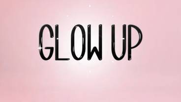
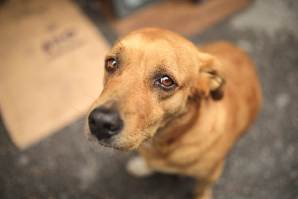

Love
21s of July
Sure, here's an improved version of your paragraph while retaining the raw and unfiltered touch:
Today, I've got a cooking story to share. So, yesterday, I was starving, and I headed to the kitchen to find something to eat. My mom wasn't home, and guess what I found? A complete mess! Dirty dishes piled up, plates scattered all over, and jars in disarray – probably the aftermath of some guests visiting. I was so damn frustrated, and my hunger made it even worse. I was like, "Why the heck is the kitchen in this state? And why is there nothing to eat?"
But then, I tried to think rationally. I put myself in my mom's shoes – imagine dealing with all this chaos and still managing to cook and clean up regularly. Damn, it must be tough! Suddenly, my anger turned into empathy for my mom's hard work.
Feeling guilty about the mess, I decided to do something about it. I cleaned the entire kitchen – washed over 20 utensils, scrubbed those dishes, and yeah, the floor too! Let me tell you, it's way more challenging than I thought, especially since I'm a guy, and society has this messed up mentality that guys shouldn't do household stuff. Screw that! I'm helping my mom, no matter what they say.
Now, back to my hunger. I thought, "Why not cook something?" And then it hit me – I remembered a recipe from my hostel days when I was just a kid. I had to dig deep into my memory and recreate that damn paneer dish I used to sneak a peek at when the hostel kitchen smelled amazing.
So, I gathered all the ingredients and started cooking. It was like a flashback to those old days. The kitchen filled with nostalgia, and I felt connected to my past self. Finally, I plated up the dish, and just when I thought I was gonna mess it up, my mom arrived home.
We tasted the food together, and guess what? My mom said it was even better than her cooking! Damn, that felt so good – like I achieved something big.
This whole experience taught me something valuable. Before getting mad or frustrated, try seeing things from the other person's perspective. I get it now, and it's all about understanding and appreciating the hard work someone else puts in. And let me tell you, cooking and cleaning ain't no joke!
So yeah, that's my cooking adventure and the lesson I learned – a little empathy can change everything. Now, who's up for some delicious homemade paneer? I got you covered!
Love
24th of June
Love, the most trending topic all around.Or you better say true love what people term it as .Very honestly for me it is one of those topic which makes me feel that ,quantum mechanics is easier.But at the same time i can speak on the topic for whole the day.
Few people say it ,its the most beautiful feelings you will ever experience,some say it makes you feel butterfly in the stomach,or some say it like a magic.
But the question arises is that why doesn't these feelings about someone last long,why it vanishes?
Is the end of feelings towards someone is the end of the relationship?
Okay lets start with answering the first one ,i do agree with all the peoples definiton about love,they want to convey the same things but in different ways,if we look into the physoclogical aspect of its nothing but you just had the happy chemicals for the moment and then you get attached.For someone it might be attractions of appearance ,for someone it might be attraction of thought process,for someone attractions charactersitic/behaviour of the persons.You just start liking any aspect of the person or many aspects of the person.
The seocnd question's answer is do dam related to the first one. like okay fine you had feelings ,what next?One should rely untill the feelings exist?No,definitely not ,nothing in this world is constant,not even a single thing,change is the only constant,So one shouldn't rely on the feeling to keep a relatioship.Instead one should rely on respect towards each other,the trust towards each other,the understanding towards each other,these won't vansihes away quickly because these have build over time,these aren't just feelings but practises.
'Respect for each other is most important'
Glow-Up

25th of May
Glow up? I mean I was really thinking about it, when we look in our old pictures and compare it with the new one we feel like we have glow up a lot, we look better, yeah that's true but It's that the complete glow up? Isn't it obvious that our physical appearance changes over time and with evolution of AI the photos get better. But what remains almost static is our mental growth, which doesn't enhance without effort, it requires efforts and hard work. So the complete glow should be, glow up by physical appearance, (not necessary in all the cases) and glow and grow up brain, which is necessary. At the end of the day you get paid for what you have inside your head, and how differently you think about things!
Hustle Culture

25th of May
Hustle culture, this is also among the most hottest keyword around internet.Hustle for me like is working hard and harder for your dreams.But what the issue is nowdays the hustle culute has become toxic hustle culture.By toxic hustle culture i mean is people are promoted to leave everything and work,lock their self into the rooms ,this that and shit .What i want to point out of this post is its not bad to work hard on your dreams but it is really bad to fall in the toxic social media hustle culture.Do hustle for your dreams but don't forget to live in between ,don't forget to cherish your memories,don't leave your friends and family don't let go the relatiohips you have in the hustle period of your life.at the end jyou need close people to cherish your achievements.
Street dogs

1st of May
Whenever I see street dogs around me, my mind always pops the thoughts of the way Mr Shantanu Naidu, yes that young guy whom you see with Mr Ratan Tata often.He created a belt for street dogs,that can be worn around their neck so that in night whenever lights fall on them,those belts reflect the light back.This initiative by him reduced the road accidents of street dogs in mass number.The lesson i want to point out from this post is that when you really want to help,the idea automatically pops out and like human beings the animals got soul in them too,so please its humble request that whenever you get a chance to help the street dogs around you don't hesitate.Even a biscuit could help them reduce their hunger.Thanks from the bottom of my heart❤️